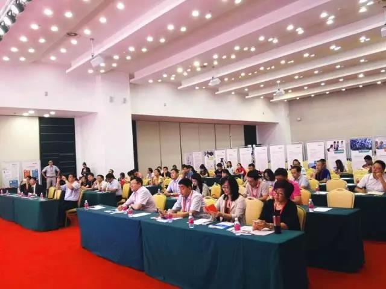
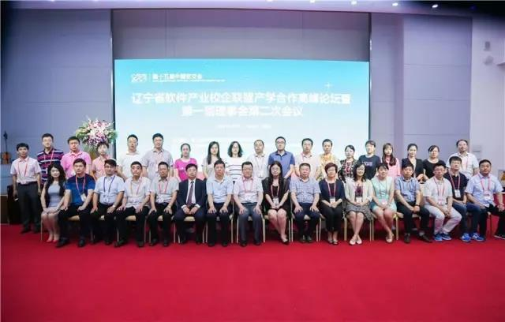
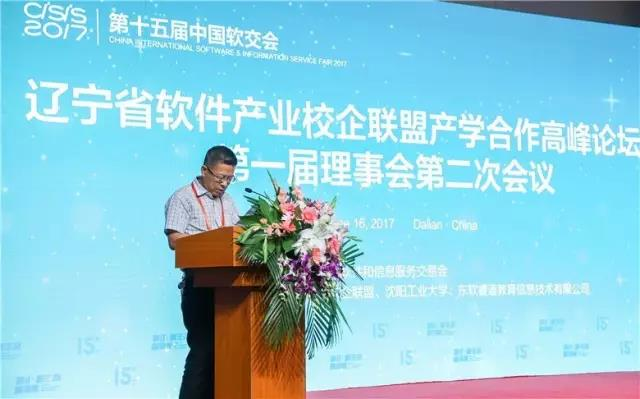
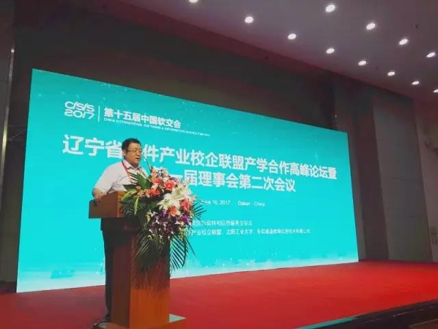
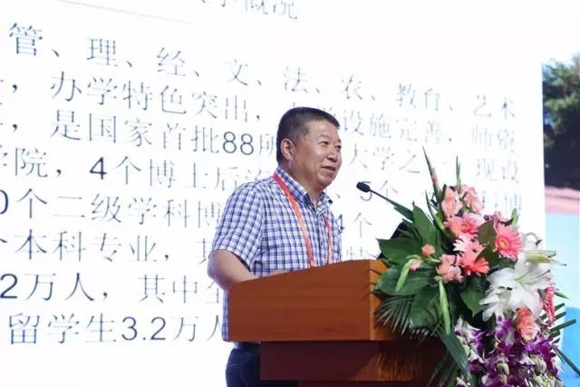
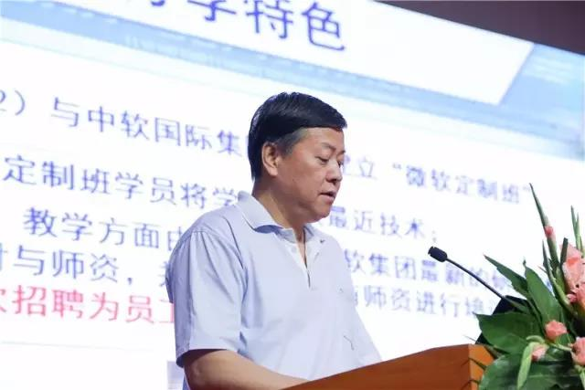
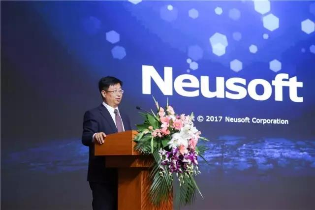
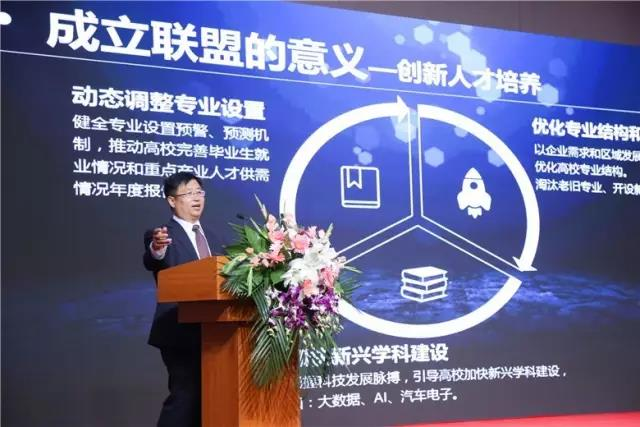
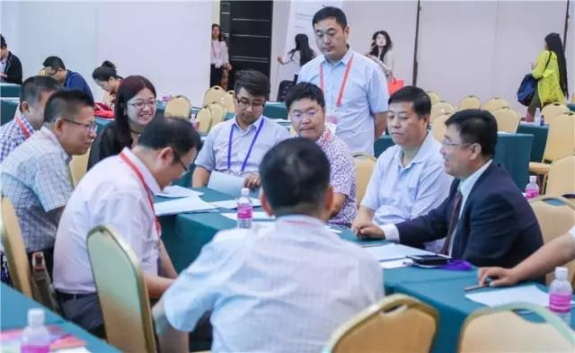
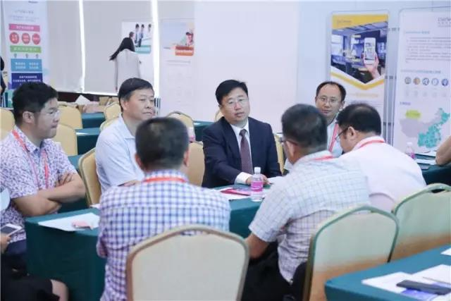

辽宁省软件产业校企联盟产学合作高峰论坛成功举办
2017-06-20 10:41
2017年6月16日，辽宁省软件产业校企联盟产学合作高峰论坛暨第一届理事会第二次会议于中国国际软件和信息服务交易会期间成功举办。沈阳工业大学和东软睿道共同承办了本次论坛，来自省内高校和企业近百人参加了论坛，共同探讨产学合作、深度融合。


论坛主持人由校企联盟秘书长、沈阳工业大学软件学院院长牛连强教授担任。他简明扼要地向与会嘉宾介绍了辽宁省软件产业校企联盟的成立初衷。辽宁省软件产业校企联盟是由辽宁省政府主导，以促进校企深入合作、创新发展为主要任务，与学校、企业、园区、和科研院所共同参与建设的省级公益平台。

沈阳工业大学软件学院院长牛连强教授
联盟理事长、沈阳工业大学副校长袁晓光教授在论坛致辞中表示：我国当下正处在由人力资源大国向人力资源强国转变，由教育大国向教育强国转变的关键时期，如何实现各方资源的有效互补，共同致力于为行业培养、输送更多的与经济、产业发展相适应的高质量人才显得至关重要。辽宁软件产业联盟的成立就是为了充当高校与企业间的桥梁。以“合作、创新、共赢、发展”为宗旨，打造政产学研创等合作多赢的协同创新发展平台，促进企业与高校在人才链、产业链、和创新创业链的深度融合。

联盟理事长、沈阳工业大学副校长袁晓光教授
辽宁工程技术大学软件学院院长刘万军教授、大连交通大学软件学院院长黄明教授分别从不同的角度出发，提出了产学合作是高校转型发展的机遇。高校可以按照企业需求设置专业方向、与企业共同制定人才培养方案，同时高校老师与企业项目经理可以共同实施教学。这些措施不但解决了高校实践教学资源与实践师资严重不足的矛盾，还能解决学生实践教学中校企合作衔接不畅、学生培养与产业需求贴合不够紧密的矛盾。只有这样，高校才能走出一条促进产业链、学科链、人才链协调发展的校企合作新路子。

辽宁工程技术大学软件学院院长刘万军教授

大连交通大学软件学院院长黄明教授
校企合作架设两端，一端是IT人才的供给方，一方是IT人才的需求方。东软控股副总副、东软睿道总裁李印杲老师作为企业代表分享了东软睿道“产教融合 协同育人”的历程及举措。

东软控股副总裁、东软睿道总裁李印杲老师
李老师在演讲中提到东软睿道刚刚在上午的中国软交会“产业融入教育”论坛上发布了2017全新的四大人才培养方案，分别为大数据、汽车电子、网络安全、跨境电商。这四大方向都是依托东软二十余年的产业积累，将东软一线的实践经验融入到东软睿道的IT教育中。未来，东软睿道将协同学校逐步建立和完善校企共建、产学结合的人才培养模式；培养学生通过实践项目的参与和创新，实现就业和创业的有效通道；为企业提供适应产业发展需要的应用型、复合型、创新型人才。

论坛最后，辽宁省软件产业校企联盟召开了第一届理事会第二次会议。会上来自政产学研的专家纷纷表示“校企合作”已经成为产业与教育发展的大趋势，联盟应该充分整合优质的产业资源与教育资源，更加积极地携手探索“产学合作 协同育人”的新模式、新思想。

